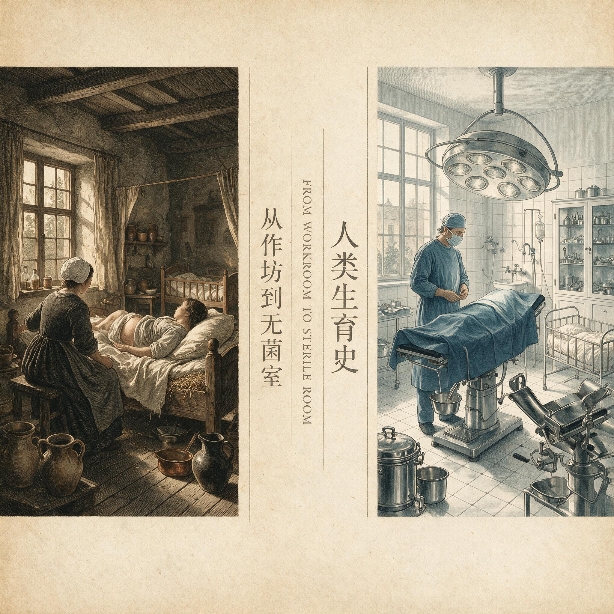

第 7 章
从作坊到无菌室
伦敦东区白教堂路的一间橡胶制品作坊，二楼车间的木制模具正悬挂在绳索上晾干。工人们将阳具形状的木模浸入乳白色的橡胶溶液中，提起，旋转，让多余的溶液滴回桶内，然后挂上晾架。这个动作每天

从作坊到无菌室：历史出版插图
AI 生成插图，非史实影像。
重复数百次。浸渍的厚度全凭手感——师傅会告诉你浸三次太薄，浸五次太厚，但没有人测量过每一次浸渍后橡胶膜的确切厚度。产品晾干后从模具上卷下来，装入没有印刷任何说明的纸袋，送往药房、理发店和杂货铺的柜台。
这是1910年的生产场景。同一时期，美国芝加哥一家药房的柜台前，一位妇女低声询问有没有“女性卫生用品”。店员从柜台下取出一个纸盒，里面装着几个尺寸不一的橡胶圈——那是宫颈隔膜的雏形。没有医生在场，没有盆腔检查，没有尺寸测量。顾客凭目测挑选一个，付钱，离开。如果尺寸不合适，她只能下次再来换一个，或者干脆放弃使用。产品包装上没有制造商名称，没有使用说明，没有质量保证。
三十年后，1942年，美国陆军军需部向西海岸一家橡胶制品公司发出采购合同，技术规格书长达四页。
乳胶避孕套长度不得小于180毫米，宽度54毫米，允差正负2毫米，单层厚度0.05至0.08毫米。每只避孕套必须通过充水300毫升无泄漏测试，每批产品随机抽取百分之二进行电子针孔检测。不合格率超过百分之零点四，整批拒收。同一年的纽约，玛格丽特·桑格创办的生育控制诊所里，医生为一位已婚妇女测量了宫颈直径和阴道穹窿深度，试用三种尺寸的隔膜，最终开具处方，指定72毫米型号，预约两周后复诊，检查适配情况和可能的黏膜刺激反应。病历记录完整，签名清晰。
这两个场景之间的三十年，不只是一段技术改良的历史。它记录了一种根本性的转变：避孕器具从分散的、非正式的、由用户自行判断的商品，变成了集中的、标准化的、由专业权威控制的医学装置。转变的驱动力不是某个发明家的灵光一现，而是工程扩散的逻辑——当一种产品从作坊进入工厂，从私下交易进入公共卫生采购，从民间知识进入医学规范，它的生产方式、质量标准、流通渠道和使用方式必然发生系统性重组。
天然橡胶避孕套在19世纪后期已经进入市场。查尔斯·古德伊尔在1839年发现橡胶硫化工艺后，橡胶制品从易熔易碎的季节性材料变成了稳定耐用的工业原料。最早的橡胶避孕套出现在1850年代，但生产方式极其原始。
硫化需要将生橡胶与硫磺混合后在特定温度下加热，温度控制依赖操作者的经验，时间控制依赖钟表，批次之间的差异无法避免。更根本的问题在于，天然橡胶需要溶解在有机溶剂中才能形成可浸渍的溶液，溶剂的挥发速度、溶液的黏度、环境温度都会影响浸渍膜的均匀性。
小作坊缺乏精确控制这些变量的能力，产品厚度通常在0.2毫米以上——这个厚度不仅影响使用感受，更重要的是，厚薄不匀的橡胶膜容易出现微小的气孔。这些气孔是避孕套作为工业产品最致命的缺陷。肉眼无法识别，手指触摸无法感知，但它们足以让精子通过。在实验室检测手段出现之前，制造商和用户都无法确认一只避孕套是否真正有效。
1917年，美国参加第一次世界大战后，陆军军医署面临一个严峻的问题：驻法美军的性病感染率高得惊人。军方统计显示，1917年9月至12月，驻法美军中诊断出性病的新发病例超过两万例，部分部队的感染率达到惊人的水平。性病不仅造成战斗减员，更消耗大量医疗资源——治疗一期梅毒需要至少六周的住院，治疗淋病需要数周。军方急需一种可大规模部署的预防手段。答案指向避孕套。
但军方很快发现，市场上的避孕套质量极度不可靠。1918年，陆军军医署的一份内部报告指出，从不同供应商采购的避孕套在厚度、强度和可靠性上差异巨大，“部分产品在使用中破裂率超过百分之十”。军方开始制定初步的质量标准，要求供应商提供“经过测试”的产品，但测试方法仍然原始——充水试验，靠肉眼观察是否有水渗出。这种测试可以检出较大的破损，但无法发现微小的气孔。
真正的转折发生在1920年代，乳胶工艺引入避孕套生产。乳胶是橡胶树的天然乳液，采集后经过离心浓缩和氨稳定处理，可以直接用于浸渍。
与天然橡胶溶液不同，乳胶的黏度低得多，流动性好，可以在模具表面形成更均匀的薄膜。更重要的是，乳胶不需要有机溶剂，浸渍后通过低温干燥即可固化，避免了溶剂挥发造成的气泡和针孔。连续浸渍技术让同一模具可以反复浸入乳胶槽，每次浸渍后经过低温干燥，形成一层致密的橡胶膜，多次叠加后达到所需厚度。这一工艺不仅提高了生产效率——一条生产线每天可以生产数千只避孕套——更关键的是大幅减少了气孔率。
乳胶工艺的引入不是避孕套行业的自发选择，而是受到公共卫生需求的推动。第一次世界大战结束后，美国军方虽然缩减了采购规模，但战时积累的经验进入了公共卫生系统。1920年代，美国社会卫生协会等组织开始推动性病防控，避孕套作为“预防性病传播的机械屏障”被纳入公共卫生策略。这意味着避孕套的消费者不再只是个体用户，还包括政府公共卫生机构和军队——这些机构有能力也有意愿对产品质量提出系统性的要求。1930年代，美国食品和药品管理局开始介入避孕套的市场监管。
1938年，联邦食品、药品和化妆品法案通过，赋予FDA对医疗器械的监管权力。虽然避孕套在当时仍主要被归类为“预防性病用品”而非避孕器具——这一分类策略本身就是为了规避康斯托克法案对避孕信息的禁令——但监管的介入意味着制造商必须面对统一的质量标准。FDA开始对市售避孕套进行抽样检测，公布不合格产品名单。1930年代末的一项FDA抽样调查显示，市场上仍有部分品牌的避孕套气孔率超过百分之五，这些品牌被公开通报后销量急剧下降。
质量抽检的逻辑深刻改变了避孕套的生产方式。在小作坊时代，质量标准是隐性的——用户使用后如果发现破裂或怀孕，可能下次换一个品牌，但反馈机制迟缓且不可靠。抽检制度建立后，质量标准变成了显性的、可量化的、有法律后果的技术指标。制造商必须建立内部质量控制体系，对每批产品进行抽样检测，保留检测记录，以备监管机构核查。
这意味着避孕套第一次被当成一个可失败的工业产品来管理——它的性能可以被测量，它的缺陷可以被追溯，它的质量可以通过工艺改进来提升。
第二次世界大战将这一趋势推向高峰。1941年美国参战后，军方再次成为避孕套的最大采购方。这一次，军方采购合同的规格书比1918年详细得多。陆军军需部的技术标准不仅规定了尺寸和厚度，还要求每只避孕套通过充水300毫升无泄漏测试，每批产品随机抽取百分之二进行电子针孔检测。
电子针孔检测是当时的新技术——将避孕套套在一个带电的金属模具上，浸入导电溶液，如果橡胶膜存在针孔，电流会通过针孔形成回路，触发报警。这种检测方法可以检出直径小至微米级的气孔，远超肉眼检测的灵敏度。
军方的采购规模推动了生产工艺的进一步标准化。1940年代，一家大型乳胶避孕套制造商的生产线可以日产数万只产品。每一只避孕套经过浸渍、干燥、卷边、脱模、检测、包装多个工序，每个工序都有操作规程和质量检查点。
批次一致性成为核心指标——同一批产品的尺寸、厚度、强度必须保持在允差范围内，确保用户拿到任何一只都能获得相同的保护效果。这种一致性在小作坊时代是无法想象的，那时同一批次内的产品差异可能超过不同批次之间的差异。
但标准化也带来了新的问题。军方规格书规定的尺寸是基于统计学上“平均男性”的解剖参数制定的。1940年代的美军人体测量数据显示，阴茎勃起长度和周长在人群中呈正态分布，规格书选取的是均值和常见变异范围。这意味着处于分布两端的男性——尺寸明显小于或大于均值的人——使用标准尺寸避孕套时可能面临滑脱或破裂的风险。
但在大规模标准化生产的逻辑下，这种个体差异被统计均值覆盖了。使用者必须适应产品，而不是产品适应使用者。这个看似技术性的问题实际上揭示了工程扩散的一个核心特征：当产品从定制化转向大规模生产，个体差异必然被标准化所忽略，那些不符合“标准用户”假设的人将承受更高的失败风险。
与避孕套的工业化同步，宫颈隔膜也在经历从作坊产品到医学装置的转变。19世纪末，德国医生威廉·门辛加发明的宫颈隔膜——当时称为“子宫托”——最初是由妇科医生为个别患者定制的小型橡胶帽。医生在诊所中测量患者的宫颈直径和阴道穹窿深度，然后委托医疗器械作坊手工制作。每一只隔膜都是定制品，尺寸精确到毫米，制作周期数天，价格昂贵。这种模式决定了隔膜只能是少数富裕女性才能获得的避孕手段。
20世纪初，橡胶工业的发展使隔膜的大规模生产成为可能。制造商开始生产标准尺寸的隔膜，从50毫米到90毫米不等，每5毫米为一档。医生在诊所中为患者测量尺寸后，从标准尺寸中选择最接近的型号开具处方，患者凭处方到药房购买。这一模式看似保留了定制化的医学适配，但实际上将用户纳入了标准化的分类体系。隔膜不再是为个体定制的产品，而是从标准尺寸中选择“最适配”的型号——适配的精确性取决于尺寸分档的细密程度和医生测量的准确性。
1920年代，玛格丽特·桑格在美国推广避孕诊所运动时，隔膜适配成为诊所的核心服务。桑格1923年在纽约开设的生育控制临床研究所——这是美国第一家合法的避孕诊所——将隔膜适配作为标准流程。患者就诊时，医生首先询问生育史和健康状况，然后进行盆腔检查，测量宫颈直径、阴道穹窿深度和耻骨弓角度，根据测量结果选择隔膜型号，试戴后让患者走动、下蹲、咳嗽，确认隔膜位置稳定且无不适感。
适配完成后，医生会教患者如何放入和取出隔膜，如何配合杀精剂使用，如何清洁和保存。病历详细记录每一次测量的数据、适配的型号、患者的反馈和医生的判断。这套流程在今天看来完全合理——它确保了隔膜的有效性和安全性。
但放在1920年代的社会背景下，它的含义更为复杂。隔膜适配将避孕从私下交易变成了医疗行为，从消费者自主选择变成了专业权威裁量。女性不再能自行判断需要什么尺寸的隔膜，她必须接受医生的检查、测量和判断。病历记录将她的身体参数固定在档案中，成为医学凝视的对象。
诊所预约制度将她的避孕需求纳入医疗机构的日程安排——她不能随时获得避孕工具，只能在特定时间、特定地点、经过特定程序后才能获得。
这种医学化带来了双重结果。一方面，它确实提高了隔膜的有效性和安全性。适配不良的隔膜可能在使用中移位，导致避孕失败，或者压迫阴道黏膜造成不适甚至损伤。医生通过盆腔检查确定尺寸，大幅降低了这些风险。诊所的复诊制度可以及时发现和解决适配问题，病历记录积累了关于隔膜使用效果的临床数据，为进一步改进产品提供了依据。
另一方面，医学化将避孕的决定权从女性手中部分转移给了医疗系统。她需要获得医生的同意才能得到隔膜——这意味着她必须能够接触到提供避孕服务的医生，必须能够支付诊疗费用，必须在预约时间出现在诊所，必须接受医生的询问和检查。对于1920年代的美国女性来说，这些条件本身就是巨大的筛选机制。贫困女性、农村女性、没有固定住所的女性、无法请假就诊的女性——她们被系统性地排除在医学化的避孕服务之外。
桑格的诊所虽然努力降低费用，但诊疗费加上隔膜的费用仍然超出了许多低收入家庭的承受能力。1920年代，纽约生育控制临床研究所的一次隔膜适配收费约为五美元，而当时美国工人的平均周薪约为二十至二十五美元。一次适配就要花掉工人家庭近四分之一的周收入。
更隐蔽的筛选机制在于知识传播的限制。康斯托克法案虽然主要针对邮寄避孕信息，但其威慑效应让许多医生不敢公开提供避孕服务。1920年代，美国医学会对避孕的态度仍然暧昧——部分医生认为避孕是道德问题而非医学问题，拒绝将其纳入常规医疗实践。这意味着即使女性有经济能力就诊，她也需要找到愿意提供避孕服务的医生，而这类医生在1920年代仍属少数。桑格的诊所网络虽然不断扩展，但到1930年，全美只有约五十家生育控制诊所，集中在纽约、芝加哥、洛杉矶等大城市。居住在中小城市和农村地区的女性，实际上无法获得医学化的隔膜适配服务。
就在避孕套和隔膜走向标准化的同一时期，另一种避孕器具进入了医学视野——宫内节育器。
它的早期历史与避孕套和隔膜截然不同。避孕套和隔膜是外部屏障，放置和取出由用户或医生操作，不涉及手术。宫内节育器是植入式器具，需要医生将异物置入子宫腔，这就将避孕从非侵入性干预变成了侵入性医疗操作。
最早的宫内节育器临床尝试可以追溯到19世纪末，但真正引起医学界关注是在1920年代。德国医生恩斯特·格雷芬贝格在1928年发表论文，报告了他使用丝线和银丝制成的宫内节育器的临床经验。格雷芬贝格的节育器是将银丝绕成环形，放置于子宫腔内，通过引起子宫内膜的局部反应来阻止受精卵着床。
他的报告显示，在一组接受放置的女性中，避孕成功率较高，但感染率也不容忽视——部分患者在放置后出现盆腔炎性疾病，严重者需要手术取出节育器并接受抗感染治疗。格雷芬贝格的报告在医学界引发了激烈争论。支持者认为宫内节育器提供了一种不需要每次性行为前临时操作的避孕方法——女性一旦放置，可以在数月甚至数年内获得持续的避孕保护。
反对者指出，将异物长期置于子宫腔内违反了基本的医学原则——子宫腔是无菌环境，任何异物的置入都增加了感染风险。更重要的是，1920年代的医疗条件难以保证放置过程的无菌操作。抗生素尚未问世，一旦发生盆腔感染，治疗手段非常有限。部分感染病例导致输卵管粘连和不孕，这意味着一种旨在暂时避孕的器具可能造成永久性的生育能力丧失。这些争论揭示了植入式避孕与屏障类避孕之间的根本区别。
避孕套和隔膜的标准化可以在工厂和诊所中分别完成——工厂负责生产标准化产品，诊所负责个体化适配。但宫内节育器的标准化面临更复杂的挑战。节育器的材料和形状可以标准化——格雷芬贝格使用的是银丝环，后来的医生尝试过蚕肠线、不锈钢、塑料等材料——但放置技术无法标准化。放置节育器需要医生将器械通过宫颈管送入子宫腔，这个过程的难度取决于患者的宫颈管形态、子宫位置和医生的手感经验。放置过深可能穿孔子宫壁，放置过浅可能脱落，放置过程中可能引入细菌导致感染。
每一位患者的解剖结构都是独特的，医生的每一次操作都是个人的——这意味着宫内节育器的安全性和有效性高度依赖操作者的技能和判断，而非产品的工程标准。1930年代，宫内节育器在德国和欧洲一些国家获得了有限的临床应用，但在美国和英国，医学界的态度普遍保守。美国医学会在1930年代没有批准宫内节育器作为标准避孕方法，大多数医院不允许医生放置节育器。部分医生在私人诊所中为经过严格筛选的患者放置，但数量极少，且严格保密。
宫内节育器在1930年代的处境，与避孕套和隔膜形成了鲜明对比——后者正在走向大规模工业生产和公共卫生采购，前者仍然停留在零散的临床尝试阶段，缺乏系统的临床数据，缺乏统一的操作规范，缺乏可追溯的质量控制。这种差异不是偶然的。屏障类避孕器具的工程标准化依赖于工业制造和材料科学的进步——乳胶工艺、质量抽检、批次一致性标准，这些都是工厂体系能够解决的问题。
植入式避孕器具的工程标准化需要的是医学知识的积累——关于子宫生理的深入理解、无菌操作技术的普及、抗生素的发明、影像学诊断手段的出现。这些条件在1920至1930年代尚不具备。宫内节育器的历史在这个时期停顿了，不是因为它被证明无效或危险，而是因为支持它安全使用的医学基础设施尚未建立。
回到避孕套和隔膜的标准化进程，一个关键问题浮现出来：谁在制定标准？标准的制定过程反映了怎样的权力结构？1942年美国陆军军需部的避孕套规格书，是由军方医学顾问、公共卫生官员和制造商工程师共同制定的。用户——使用这些避孕套的士兵——没有参与标准制定。他们的需求和体验是通过军方医学统计间接表达的：破裂率数据、性病感染率数据、使用投诉记录。这些数据反映的是群体趋势，而非个体差异。
标准尺寸的设定基于人体测量学的统计均值，这意味着相当一部分使用者被排除在“标准”之外，但他们的排除是隐性的——规格书不会写明“不适合尺寸小于均值的使用者”，它只是设定了一个标准尺寸，把适合性问题留给了市场和使用者自己解决。
隔膜标准化中的权力结构更为明显。医生通过盆腔检查决定隔膜尺寸，这个过程的医学合理性毋庸置疑，但它同时建立了一种医患之间的知识不对称。女性被要求接受医生的判断，但她无法自行验证这个判断是否正确。如果隔膜使用后出现不适或失败，她只能返回诊所寻求调整——她不能自行更换尺寸，因为没有处方药房不会出售隔膜。她对自己身体的认知——宫颈的位置、阴道的深度、耻骨弓的角度——被医生的测量和病历记录所取代。医学知识赋予医生裁量权，但也剥夺了女性自我判断的可能性。
这种权力转移在当时的医学文献中可以看到痕迹。1920至1930年代的妇科学教科书在讨论避孕时，反复强调隔膜适配必须由医生完成，“患者自行选择的尺寸通常不正确”。
这一判断有临床依据——研究显示，女性自行选择的隔膜尺寸与实际适配尺寸之间存在显著偏差。但教科书没有讨论的是，为什么女性会自行选择尺寸？答案在于医疗服务可及性的限制。当女性无法获得或无法负担医生的适配服务时，她只能在药房自行购买。医学化提高了适配的准确性，但也将那些被医疗系统排斥在外的女性置于更困难的境地——她们要么不使用避孕工具，要么使用可能不适配的隔膜，要么转向其他更不可靠的避孕方法。
1930年代，美国生育控制运动的领导者们意识到了这个矛盾。桑格和其他活动家在推动避孕诊所普及的同时，也在争取修改法律，允许避孕信息的传播和避孕器具的邮寄。他们的目标是将避孕从医学权威的垄断中解放出来，让女性能够通过教育获得自主避孕的能力。但这一努力面临双重阻力——保守势力以道德理由反对避孕合法化，部分医生以专业理由反对避孕去医学化。两者的联盟看似矛盾，实际上共享同一个预设：女性不应该或者不能够自主决定生育。
1936年，美国联邦第二巡回上诉法院在“美国诉一包子宫托”案中做出判决，认定医生为保护患者健康而开具避孕器具处方不属于违反康斯托克法案。这一判决打开了医生合法提供避孕服务的法律空间，但它同时强化了避孕的医学化——避孕器具的合法性依赖于医生的处方权，女性不能直接合法购买。判决书明确指出，避孕器具的合法性是“附属于医学判断”的，而非独立的个人权利。这意味着工程扩散带来的标准化和医学化，在提高产品质量的同时，也将用户锁定在医疗系统中。
避孕套的情况略有不同。由于避孕套被主要宣传为“性病预防用品”而非避孕器具，它在法律灰色地带中获得了较大的流通空间。药房、理发店、加油站、自动售货机都可以出售避孕套，购买者不需要处方，不需要医生许可。但避孕套的标准化同样将用户排除在知识生产之外。质量抽检的数据由监管机构和制造商掌握，用户只能通过个人使用经验判断产品可靠性。
避孕套包装上的说明极其简略——部分产品甚至没有使用说明，因为详细说明可能被视为“传播避孕信息”而触犯法律。用户拿到的是一个工业产品，但关于这个产品的知识——如何正确使用、如何判断质量、失败率是多少——仍然难以获得。1930年代末，美国公共卫生服务部的一份调查显示，即使在避孕套广泛销售的城市地区，正确使用率仍然不高。
部分用户不知道避孕套需要在性交开始前就戴上，部分用户重复使用一次性避孕套，部分用户使用过期或保存不当的产品。这些使用错误导致的失败被归咎于产品质量或使用者疏忽，但更深层的原因是知识传播的缺失。工程标准化解决了产品一致性的问题，但没有解决知识一致性的问题——每一个用户仍然在独自摸索使用方法，依靠口传网络中的零散信息，而这些信息的准确性无法保证。
这就是工程扩散的悖论：当避孕器具从作坊进入工厂，从私下交易进入公共卫生采购，从民间知识进入医学规范，产品的物理质量确实提高了，但使用知识的生产和传播却没有同步标准化。
工厂可以确保每一只避孕套的厚度一致，但无法确保每一个用户都知道如何正确使用。诊所可以为每一位患者适配隔膜尺寸，但无法确保每一位女性都理解隔膜的工作原理和维护方法。这个悖论在避孕套和隔膜的历史中反复出现，直到20世纪后期才通过系统的性教育和公开的避孕信息传播得到部分解决。
早期宫内节育器的历史则揭示了这个悖论的另一个维度。植入式避孕器具的工程标准化不仅需要产品本身的标准化，还需要放置技术的标准化、无菌操作的标准化、术后随访的标准化、并发症处理的标准化。这些标准化的实现需要整个医疗系统的基础设施支撑——训练有素的医生、合格的手术室、可靠的消毒设备、有效的抗感染药物、系统的临床数据收集和分析。在1920至1930年代，这些条件尚不具备。宫内节育器在这个时期的边缘化，不是因为它作为一种避孕方法的内在缺陷，而是因为支持它安全使用的工程—医学复合体尚未建成。1940年代，抗生素的出现开始改变这一局面。
青霉素在二战期间大规模生产并用于治疗细菌感染，盆腔炎性疾病的治疗有了有效手段。这为宫内节育器的复兴创造了条件——感染不再意味着必然的严重后果，医生对放置节育器的风险计算发生了变化。但抗生素只是解决了感染治疗的问题，没有解决放置标准化的问题。宫内节育器的放置仍然高度依赖医生的个人经验，脱落率、穿孔率、感染率在不同医生之间差异显著。真正的标准化要等到1960年代以后，当医学影像技术可以实时监测放置过程，当大规模临床试验积累了足够的统计数据，当工程材料科学提供了更安全的节育器材料时，才逐步实现。
回到1942年那两个并置的场景。美国陆军军需部的采购合同和纽约生育控制诊所的适配记录，标志着避孕器具的工程扩散达到了一个阶段性节点。避孕套从作坊手工浸渍变成了工厂流水线生产，每一批产品都要通过充水试验和电子针孔检测，不合格率超过百分之零点四就整批拒收。隔膜从药房柜台自行选购变成了诊所医生处方，每一次适配都记录在病历中，两周后复诊确认。
这些变化确实提高了避孕的有效性和安全性——1940年代使用标准避孕套的意外怀孕率明显低于1910年代使用手工避孕套的水平，医生适配的隔膜比自行选购的隔膜避孕效果更可靠。
但这些变化也带来了新的问题。工程标准化将用户变成了需要被测量、审查和适配的对象。避孕套的标准尺寸基于统计均值，处于分布两端的用户面临更高的失败风险，但规格书不会为这些少数用户做出调整。隔膜的处方制度将避孕决定权从女性手中部分转移给医生，那些无法获得医疗服务或不愿接受医学检查的女性被排除在有效避孕之外。宫内节育器的早期尝试揭示了植入式避孕的工程标准化远远落后于屏障类产品，医生对放置、取出和感染的判断仍然高度依赖个人经验，缺乏系统的质量控制。
1937年，美国医学会最终承认避孕是“合法的医学实践”。这一声明为医生提供避孕服务扫除了职业风险，但它同时巩固了避孕的医学化——避孕被定义为医学问题，需要医学判断，应该由医学权威控制。
同年，美国生育控制联盟的年度报告显示，全美生育控制诊所的数量已增至约三百家，但地理分布极不均衡——纽约州有超过五十家，密西西比州一家都没有。医学化提高了服务质量，但也加剧了获取服务的不平等。1941年，美国邮政局终于允许医生邮寄避孕器具和相关信息，但普通民众仍然不能通过邮寄获得避孕用品。这条规定在医生和公众之间划出了一条清晰的法律边界——医生可以合法地处理避孕，公众只能在医生的许可下合法获得避孕。工程扩散带来的标准化和医学化，在这个法律框架中获得了制度性的确认。
避孕器具不再是可以在邻里网络中流转的普通商品，而是需要经过医学—工业复合体认证和分配的专门装置。这个复合体的出现，为下一阶段的避孕技术革命准备了基础设施。当1950年代口服避孕药的研究开始时，研究者们可以利用已经建立的临床试验网络、医生协作体系、监管审批流程和工业生产能力。
药片的生产需要制药工业的精确配比和质量控制，药片的临床试验需要医学机构的伦理审查和数据管理，药片的上市需要监管部门的批准和不良反应监测——这些制度和设施，正是在避孕套和隔膜的标准化过程中逐步建立起来的。
但口服避孕药带来的变革将远超屏障类器具——它将避孕从性行为前的临时操作变成了每日服用的常规药物，将避孕的决定从每一次性行为中分离出来，变成了女性可以独立控制的生理干预。1942年纽约诊所的那份病历，记录了医生为一位妇女测量宫颈直径、试用三种隔膜、最终开具72毫米型号处方的全过程。病历的最后一行写着：“患者表示满意，两周后复诊。”
但在病历的备注栏里，有一行铅笔写的小字：“丈夫不知情。”这个备注安静地躺在档案中，没有解释，没有评论，但它记录了工程扩散无法解决的一个问题：即使避孕器具的生产、流通和使用知识从女性和邻里网络转移到了工厂、诊所和监管部门，即使产品的质量一致性达到了前所未有的高度，生育决定权仍然不完全在女性手中。
她可以使用标准化的避孕工具，但不能公开使用；她可以接受医生的适配服务，但必须对家人隐瞒；她可以获得有效的避孕保护，但这种保护建立在秘密和伪装之上。
医学—工业复合体为避孕提供了技术基础，但没有提供社会基础。技术的标准化可以确保产品的物理性能，但不能确保使用者能够自由、安全、有尊严地使用这些产品。工程扩散将避孕器具从边缘商品变成了医学装置，但围绕避孕的社会规范、法律限制和权力结构，仍然将女性置于一个矛盾的位置——她们是消费者，是患者，是测量和适配的对象，但她们还不是自己生育能力的完全自主的决定者。
这个矛盾将在接下来的历史中不断浮现，从诊所延伸到法庭，从议会延伸到街头，从口服避孕药的临床试验延伸到女性健康运动的诉求。而1942年病历上的那行铅笔字，是这个漫长故事中一个安静的、未被解答的问题。